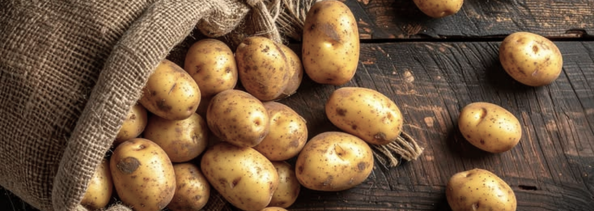
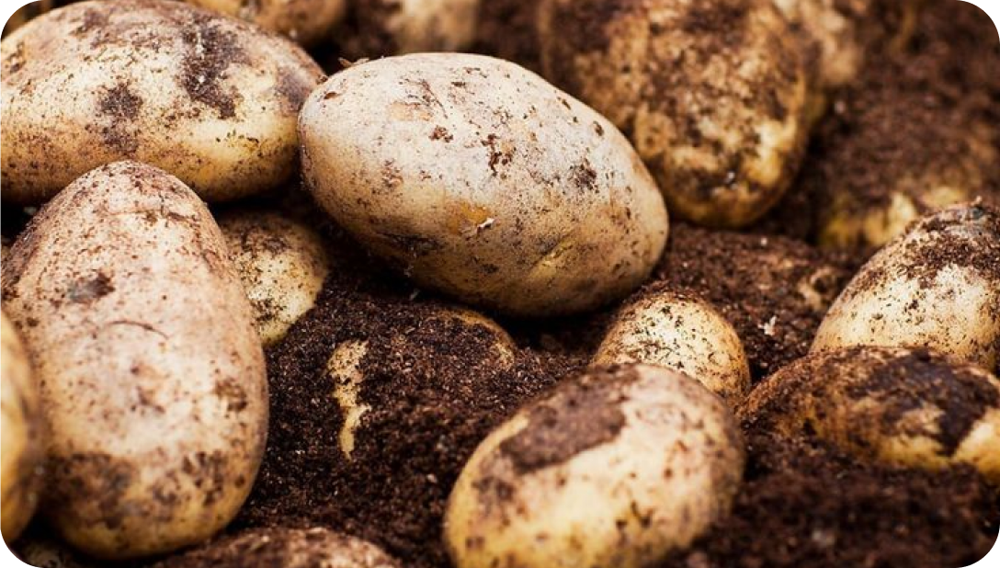

LA STORIA DELLA
PATATA
Da alimento delle Ande a protagonista delle tavole di tutto il mondo, la patata ha attraversato secoli di storia, superando diffidenze e pregiudizi.

Leggi l’articolo completoDa pianta sospetta ad alimento indispensabile
La storia della patata inizia in America, dove veniva consumata già migliaia di anni fa. Le popolazioni indigene delle Ande, nella regione degli attuali Perù e Bolivia, furono tra le prime a coltivarla e conservarla, anche ad altitudini comprese tra i 3.000 e i 4.000 metri. Per gli Inca era un alimento fondamentale e aveva anche un significato religioso.
La patata arrivò in Europa intorno al 1534, grazie alle spedizioni spagnole nelle Americhe. La sua diffusione fu inizialmente lenta, perché molti la consideravano velenosa e la utilizzavano soprattutto come pianta ornamentale o medicinale. La patata moderna deriva da antiche specie selvatiche sudamericane e, nel corso dell'evoluzione, sviluppò tuberi capaci di accumulare sostanze nutritive, permettendole di sopravvivere anche in ambienti difficili.

Dalla crescita industriale ai giorni nostri
Per molto tempo, la patata fu considerata un alimento sospetto. Appartiene alla famiglia delle Solanacee e venne associata a malattie e superstizioni. Nel 1748, il Parlamento di Parigi ne vietò persino la coltivazione, temendo che potesse trasmettere infezioni.
La situazione cambiò dalla metà del XVIII secolo, quando le carestie resero necessario trovare nuove fonti di cibo. In Francia, Antoine-Augustin Parmentier si impegnò a promuovere la patata dopo averne scoperto le qualità nutritive durante la prigionia in Prussia.

Per convincere la popolazione, secondo un famoso racconto, fece sorvegliare alcuni campi da soldati, facendo credere che le patate fossero preziose. Quando la sorveglianza venne allentata, le persone iniziarono a rubarle e a coltivarle.
Anche le difficoltà climatiche contribuirono alla sua diffusione. Nel 1816, l'anno senza estate, numerosi raccolti europei furono distrutti dal clima insolito. La patata si dimostrò più resistente dei cereali in alcune condizioni difficili e divenne gradualmente un alimento essenziale.

Dalla crescita industriale ai giorni nostri
La diffusione della patata ebbe conseguenze importanti sulla società europea. Grazie alla sua capacità di fornire molte calorie e di crescere anche in condizioni difficili, contribuì a migliorare l'alimentazione delle classi lavoratrici e, secondo diversi storici, favorì la crescita della popolazione e lo sviluppo industriale.
Non mancarono però conseguenze drammatiche. In Irlanda, tra il 1845 e il 1852, la peronospora distrusse gran parte delle coltivazioni. La popolazione, fortemente dipendente dalla patata, fu colpita da una grave carestia, aggravata dalla povertà e dalle politiche economiche britanniche. Fame e malattie causarono numerose vittime e spinsero molti irlandesi a emigrare.
Nel tempo, la patata divenne anche un simbolo delle tradizioni culinarie di diversi paesi. Oggi è coltivata in tutto il mondo e rappresenta una risorsa importante per l'alimentazione globale. La sua produzione raggiunge circa 383 milioni di tonnellate all'anno, con Cina e India ai primi posti.

La patata ha attraversato secoli di cambiamenti. Diventa un alimento fondamentale, capace di influenzare l'agricoltura, l'economia e le abitudini alimentari.